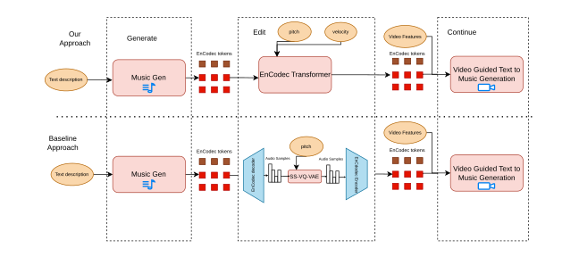
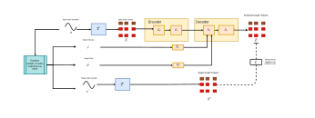
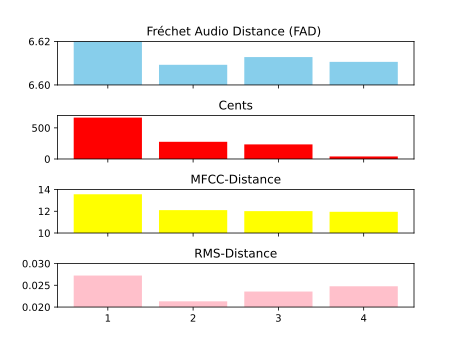
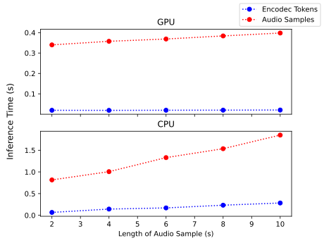

A Modular Approach to Music Generation:
Adding music controls to neural audio compression models

Randomly select new pitch of same instrument during training

We notice significant increase in quality when more than one hierarchichal token is used doing transformation. Using 2-3 tokens seems to result in about the same quality

We show that transformation from the compresssed audio space is significantly faster than transformation from traditional audio samples

3 different audio samples tranformed across an octave